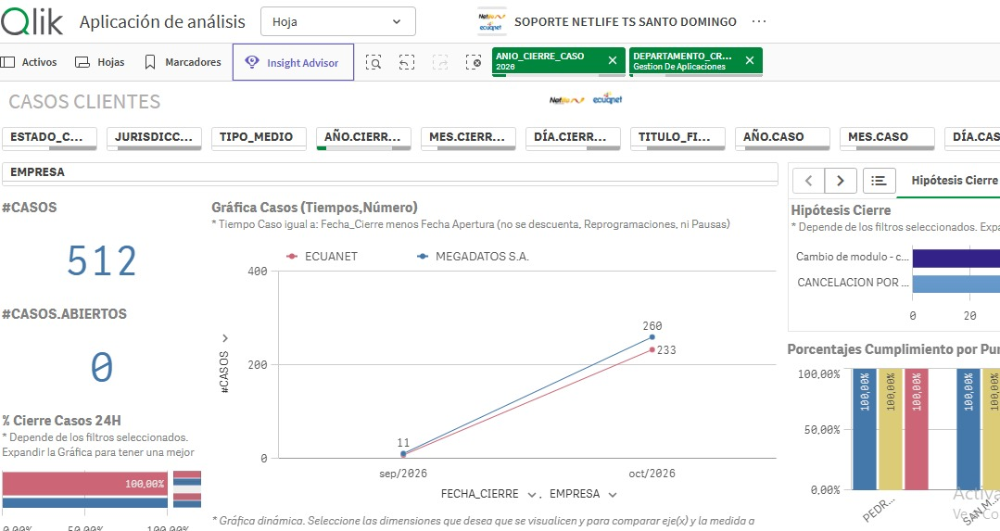

ARISTA 3
Soporte y atención de casos
935 casos gestionados en julio. Excelente eficiencia global alcanzando un 91.87% de cierres en menos de 4 horas.
CASOS NL
431
46.10%
CASOS EN
428
45.78%
CASOS TN
76
8.13%
TAREAS
116
11.04%
TOTAL GENERAL
1051
(935 casos + 116 tareas)
% cierre en menos de 4 horas por categoría
Promedio ponderado del mes: 91.87%
93.57%
93.22%
74.68%
NL
EN
TN
Gestión por Cuadrillas
Haz clic en cada barra para ver la distribución detallada de casos
Cuadrillas de Soporte
84.39%
Cuadrillas Interurbanas
15.61%
Gráfica Geeos - Octubre 2026
Análisis de casos en Qlik Sense. Haz clic para ampliar en detalle.

Haz clic para ampliar la gráfica